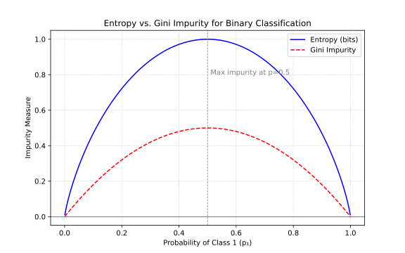
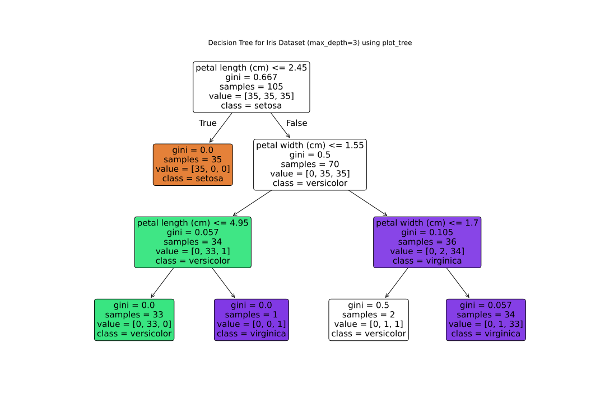
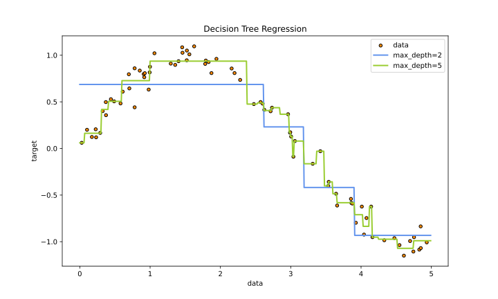
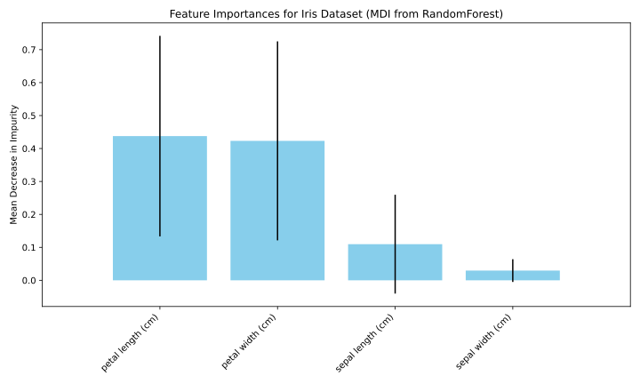
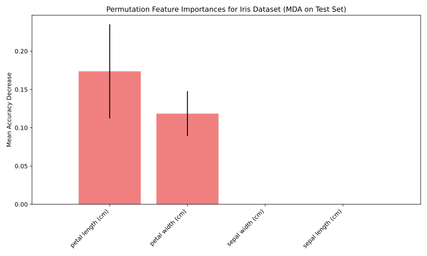

学习目标
学习目标：
理解决策树的基本原理，包括节点分裂标准（如信息熵、基尼指数）和剪枝策略。
能够使用Scikit-learn构建、训练和可视化决策树模型。
理解集成学习的基本思想及其优势。
掌握Bagging方法的原理，特别是随机森林 (Random Forest) 的构建过程和特点。
掌握Boosting方法的基本原理，理解AdaBoost和梯度提升树 (Gradient Boosting, GBDT) 的核心思想。
能够使用Scikit-learn实现随机森林、AdaBoost和梯度提升模型，并进行参数调整和评估。
了解XGBoost等先进Boosting算法的简介。
6.1 决策树简介
决策树是一种直观的监督学习模型，它通过学习数据中的简单决策规则来预测目标变量的值。树的结构类似于流程图，其中每个内部节点表示对一个属性的测试，每个分支代表一个测试输出，每个叶节点（或终端节点）代表一个类别标签（分类树）或一个数值（回归树）。从根节点到叶节点的路径对应一个决策规则。
决策树的优点：
易于理解和解释： 决策树的结构可以被可视化，使得模型的决策过程非常直观。对数据预处理要求较低： 不需要进行特征归一化或标准化（尽管对于某些实现可能有益）。能够处理数值型和类别型数据： Scikit-learn的实现目前主要支持数值型特征，类别型特征需要预处理。能够处理多输出问题。 计算成本相对较低： 预测阶段非常快。
决策树的缺点：
容易过拟合： 决策树倾向于生成过于复杂的树，完美拟合训练数据，但在未见过的数据上泛化能力差。剪枝是解决此问题的重要手段。不稳定性： 数据中的微小变动可能会导致生成完全不同的树。这个问题可以通过集成学习来缓解。对于某些复杂关系（如异或问题），决策树可能效率不高，需要较深的树。 贪心算法： 决策树的构建通常采用贪心算法，在每个节点选择局部最优的分裂，这不一定能保证全局最优。
接下来，我们将深入探讨决策树如何构建，以及如何选择最佳的分裂点。
6.2 决策树的构建与分裂标准
决策树的构建是一个递归的过程，也称为递归划分 (Recursive Partitioning) 。从包含所有训练样本的根节点开始，算法会尝试所有可能的特征和分裂点，选择一个能够最好地分离样本的特征和阈值（对于数值型特征）或子集（对于类别型特征），将当前节点划分为更纯的子节点。这个过程会持续进行，直到满足某个停止条件，例如：
节点中的所有样本都属于同一类别（节点已经”纯净”）。
没有更多的特征可供分裂。
树达到预设的最大深度。
节点中的样本数量少于预设的最小阈值。
进一步分裂不能带来显著的”纯度”提升。
6.2.1 衡量标准的思想：纯度提升
“最好地分离样本”通常意味着分裂后的子节点比父节点更”纯净”。纯度指的是节点中样本类别的一致性程度。如果一个节点中的所有样本都属于同一个类别，那么它是完全纯净的。相反，如果一个节点中的样本均匀地分布在所有类别中，那么它是最不纯净的。
决策树算法在选择分裂特征和分裂点时，会评估每个可能的分裂所带来的纯度提升 (Purity Gain) 或不纯度减少 (Impurity Reduction) 。目标是找到那个能够最大化这种提升的分裂。
常用的衡量节点不纯度的指标主要有两种：信息熵 (Entropy) 和 基尼不纯度 (Gini Impurity) 。
6.2.2 信息熵 (Entropy) 与信息增益 (Information Gain)
在信息论中，熵 (Entropy) 是对随机变量不确定性的度量。熵越大，表示数据的不确定性越高，纯度越低。
对于一个包含 \(K\) 个类别的数据集 \(D\) ，其中第 \(k\) 类样本所占的比例为 \(p_k\) （\(k=1, 2, ..., K\) ），则数据集 \(D\) 的信息熵定义为：
\[ \text{Ent}(D) = - \sum_{k=1}^{K} p_k \log_2(p_k) \]
其中，约定如果 \(p_k = 0\) ，则 \(p_k \log_2(p_k) = 0\) 。
当节点完全纯净时（所有样本属于同一类别，\(p_k=1\) for some \(k\) , and \(p_j=0\) for \(j \neq k\) ），熵为0。
当节点中各类样本均匀分布时（例如，二分类问题中，\(p_1=p_2=0.5\) ），熵达到最大值。
信息增益 (Information Gain)
假设我们使用特征 \(A\) 对数据集 \(D\) 进行分裂，特征 \(A\) 有 \(V\) 个可能的取值 \(\{a^1, a^2, ..., a^V\}\) 。使用特征 \(A\) 对 \(D\) 进行分裂会产生 \(V\) 个分支（子节点），其中第 \(v\) 个分支 \(D^v\) 包含了 \(D\) 中在特征 \(A\) 上取值为 \(a^v\) 的样本。我们可以计算每个子节点 \(D^v\) 的信息熵 \(\text{Ent}(D^v)\) 。
信息增益定义为父节点的信息熵与所有子节点信息熵的加权平均之差：
\[ \text{Gain}(D, A) = \text{Ent}(D) - \sum_{v=1}^{V} \frac{|D^v|}{|D|} \text{Ent}(D^v) \]
其中，\(\frac{|D^v|}{|D|}\) 是子节点 \(D^v\) 中样本数量占父节点 \(D\) 中样本数量的比例，作为权重。
决策树算法（如ID3算法[Quinlan, 1986]）会选择具有最大信息增益 的特征来进行分裂。
信息增益的局限性
信息增益在选择分裂特征时存在一个潜在问题：它倾向于偏好那些具有较多取值的特征。例如：
如果使用样本ID作为特征，每个ID值都对应一个唯一的样本，分裂后会得到完全纯净的子节点
这种情况下信息增益会非常高，但这种特征实际上毫无泛化能力
改进方法：信息增益率
C4.5算法(Quinlan, 1993)通过引入信息增益率(Information Gain Ratio) 来解决这个问题：
\[ \text{GainRatio}(D,A) = \frac{\text{Gain}(D,A)}{\text{IV}(A)} \]
其中\(\text{IV}(A)\) 是特征\(A\) 的固有值(Intrinsic Value)，作为对多值特征的惩罚项：
\[ \text{IV}(A) = -\sum_{v=1}^{V} \frac{|D^v|}{|D|} \log_2 \frac{|D^v|}{|D|} \]
这种方法能有效避免选择那些取值过多但无实际意义的特征。
6.2.3 基尼不纯度 (Gini Impurity) 与基尼指数
基尼不纯度 (Gini Impurity) 是另一种衡量数据不确定性或纯度的指标。它表示从数据集中随机抽取两个样本，其类别标签不一致的概率。基尼不纯度越小，数据集的纯度越高。
对于一个包含 \(K\) 个类别的数据集 \(D\) ，其中第 \(k\) 类样本所占的比例为 \(p_k\) ，则数据集 \(D\) 的基尼不纯度定义为：
\[ \text{Gini}(D) = 1 - \sum_{k=1}^{K} p_k^2 = \sum_{k \neq j} p_k p_j \]
当节点完全纯净时（\(p_k=1\) for some \(k\) ），\(\text{Gini}(D) = 1 - 1^2 = 0\) 。
当节点中各类样本均匀分布时（例如，二分类问题中，\(p_1=p_2=0.5\) ），\(\text{Gini}(D) = 1 - (0.5^2 + 0.5^2) = 0.5\) 。
基尼指数 (Gini Index)
当使用特征 \(A\) 对数据集 \(D\) 进行分裂时，我们会计算分裂后的子节点的基尼不纯度。如果特征 \(A\) 将数据集 \(D\) 分裂为两个子集 \(D_1\) 和 \(D_2\) （例如，对于二元分裂），则分裂后的基尼指数定义为子节点基尼不纯度的加权平均：
\[ \text{GiniIndex}(D, A) = \frac{|D_1|}{|D|} \text{Gini}(D_1) + \frac{|D_2|}{|D|} \text{Gini}(D_2) \]
决策树算法（如CART算法[Breiman et al., 1984]，Classification and Regression Trees）会选择那个使得分裂后基尼指数最小 的特征和分裂点。
计算效率
效果差异
Scikit-learn实现 DecisionTreeClassifier 默认使用基尼不纯度 (criterion='gini')，但也可以设置为使用信息熵 (criterion='entropy')。
下图直观地比较了二分类问题中，类别1的概率 \(p_1\) 从0到1变化时，信息熵和基尼不纯度的变化情况。
 (图 6.1: 二分类问题中信息熵与基尼不纯度随类别概率p的变化曲线。横轴p表示类别1的概率，纵轴表示不纯度度量。)
6.2.4 处理连续值特征
对于连续值（数值型）特征，决策树算法通常采用二分法来寻找最佳分裂点。具体做法是：
将该特征的所有取值进行排序。
遍历所有可能的分裂点 。一个常见策略是选择相邻两个排序后的特征值的中点作为潜在分裂点。
对每个潜在分裂点，计算分裂后的纯度提升（如信息增益或基尼指数减小量）。
选择那个能够带来最大纯度提升的分裂点作为该特征的最佳分裂点。
例如，如果某连续特征的取值有 [10, 20, 30, 40]，则潜在的分裂点可以是 15, 25, 35。
6.2.5 回归树
决策树不仅可以用于分类任务，也可以用于回归任务（预测连续值）。对于回归树：
分裂标准： 不再使用信息熵或基尼不纯度，而是使用能够最小化子节点预测值与真实值之间均方误差 (Mean Squared Error, MSE) 或其他回归损失函数（如平均绝对误差 MAE）的分裂。 假设一个节点 \(R_m\) 包含的样本的目标值为 \(y^{(i)}\) ，该节点的预测值为 \(\hat{y}_m\) （通常是该节点所有样本目标值的均值）。分裂标准是选择特征和分裂点，使得分裂后的子节点 \(R_1, R_2\) 的MSE之和最小： \[ \text{argmin} \left( \sum_{i \in R_1} (y^{(i)} - \hat{y}_{R_1})^2 + \sum_{i \in R_2} (y^{(i)} - \hat{y}_{R_2})^2 \right) \] 叶节点预测： 叶节点的预测值通常是该叶节点内所有训练样本目标值的平均值。
Scikit-learn 提供了 DecisionTreeRegressor 类用于回归任务。
6.3 决策树的剪枝 (Pruning)
如前所述，决策树非常容易过拟合训练数据，生成一个庞大而复杂的树，其在训练集上表现完美，但在未见过的测试数据上性能不佳。为了解决这个问题，需要对决策树进行剪枝 (Pruning) 。
剪枝的目的是简化决策树，牺牲一些在训练集上的准确性来换取在未知数据上更好的泛化能力。主要有两种剪枝策略：
预剪枝 (Pre-pruning / Early Stopping): 在决策树完全构建之前 就停止树的生长。具体做法是在每个节点进行分裂前，先评估当前分裂是否能够带来泛化性能的提升（例如，通过在验证集上测试，或者检查纯度提升是否达到某个阈值）。如果分裂不能带来预期的提升，则停止分裂，并将当前节点标记为叶节点。
优点： 预剪枝使得决策树的很多分支都没有展开，这不仅降低了过拟合的风险，而且显著减少了树的训练时间和存储开销。缺点： 预剪枝是一种”贪心”的策略。有些分裂可能在当前看起来不能带来提升，但基于其后续的分裂却可能导致性能的显著提高。预剪枝可能会过早地停止树的生长，导致”欠拟合”的风险。
常见的预剪枝停止条件（Scikit-learn DecisionTreeClassifier 参数）
max_depthmin_samples_splitmin_samples_leafmin_impurity_decreasemax_leaf_nodes
后剪枝 (Post-pruning): 先让决策树充分生长，构建一个完整的、可能过拟合的树。然后，自底向上地考察树中的非叶节点，尝试将其替换为叶节点（即剪掉其子树）。如果将该节点替换为叶节点后，在验证集上的性能有所提升或保持不变，则执行剪枝。
优点： 后剪枝通常能产生比预剪枝泛化性能更好的决策树，因为它是在树完全生长后，基于更全局的信息进行判断，不容易出现欠拟合。缺点： 后剪枝过程需要在完整树生成之后进行，因此训练时间开销比预剪枝要大。
Scikit-learn中的剪枝实现
预剪枝 ：DecisionTreeClassifier 主要通过参数实现预剪枝后剪枝 ：通常需要用户自行在验证集上实现，或使用支持后剪枝的高级库代价复杂度剪枝(CCP) ：从0.22版本开始支持
通过 ccp_alpha 参数控制
当 ccp_alpha > 0 时，会剪除”最弱连接”（移除后不纯度增加最小的子树）
建议使用交叉验证选择最优的 ccp_alpha 值
6.4 在 Scikit-learn 中使用决策树
Scikit-learn 提供了 DecisionTreeClassifier 用于分类任务，以及 DecisionTreeRegressor 用于回归任务。它们的使用方式与其他Scikit-learn模型类似。
6.4.1 分类决策树 (DecisionTreeClassifier)
我们将使用鸢尾花数据集来演示如何训练和可视化一个分类决策树。
from sklearn.datasets import load_irisfrom sklearn.tree import DecisionTreeClassifier, export_graphviz, plot_treefrom sklearn.model_selection import train_test_splitfrom sklearn.metrics import accuracy_scoreimport matplotlib.pyplot as pltimport graphviz # 需要安装graphviz库和对应的系统包 # 加载数据 = load_iris()= iris.data= iris.target= iris.feature_names= iris.target_names# 划分训练集和测试集 = train_test_split(X_iris, y_iris, random_state= 42 , test_size= 0.3 , stratify= y_iris)# 创建决策树分类器实例 (默认使用gini不纯度) # 我们可以设置一些预剪枝参数，例如 max_depth = DecisionTreeClassifier(random_state= 42 , max_depth= 3 ) # 限制最大深度为3层 # 预测 = clf_dt_iris.predict(X_test_iris)= accuracy_score(y_test_iris, y_pred_iris)print (f"鸢尾花数据集决策树准确率 (max_depth=3): { accuracy_iris:.4f} " )# 可视化决策树 # 方法一：使用 plot_tree (推荐，直接在matplotlib中绘制) = (15 , 10 ))= True , = True , = class_names_iris, = feature_names_iris)"Decision Tree for Iris Dataset (max_depth=3) using plot_tree" )# 保存图像到指定目录 = "images/06-decision-trees-ensemble-learning/iris_decision_tree_plot_tree.svg" format = 'svg' )# 关闭图像，防止重复显示
鸢尾花数据集决策树准确率 (max_depth=3): 0.9778
 (图 6.2: 在鸢尾花数据集上训练的决策树 (max_depth=3)。颜色表示类别，gini表示该节点的基尼不纯度，samples表示落入该节点的样本数，value表示各类别样本数分布。)
主要参数解读 (DecisionTreeClassifier) ：
criterion: string, “gini” (默认) 或 “entropy”。衡量分裂质量的函数。splitter: string, “best” (默认) 或 “random”。选择分裂的策略。“best”会尝试所有特征的所有可能分裂点；“random”会随机选择一部分特征和分裂点进行尝试，可能在某些情况下加速训练或增加树的多样性（用于集成）。max_depth: int, 默认=None。树的最大深度。如果为None，则节点会一直扩展直到所有叶子都是纯的，或者直到所有叶子包含少于min_samples_split个样本。min_samples_split: int or float, 默认=2。分裂内部节点所需的最小样本数。min_samples_leaf: int or float, 默认=1。叶节点所需的最小样本数。max_features: int, float, string or None, 默认=None。寻找最佳分裂时要考虑的特征数量。
如果为int，则在每个分裂点考虑max_features个特征。
如果为float，则max_features是一个百分比，int(max_features * n_features)个特征在每个分裂点被考虑。
如果为”sqrt”，则max_features=sqrt(n_features)。
如果为”log2”，则max_features=log2(n_features)。
如果为None，则max_features=n_features。
random_state: int, RandomState instance or None, 默认=None。用于控制估计器的随机性。当splitter="random"时，或者在选择特征时（如果max_features < n_features），会用到。max_leaf_nodes: int or None, 默认=None。以最佳优先的方式生长一棵具有max_leaf_nodes的树。最佳节点定义为不纯度相对减少最多的节点。如果为None则叶节点数量不受限制。min_impurity_decrease: float, 默认=0.0。如果一个节点的分裂导致不纯度的减少大于或等于此值，则该节点将被分裂。class_weight: dict, list of dicts, “balanced” or None, 默认=None。与类别关联的权重。用于处理类别不平衡问题。ccp_alpha: non-negative float, 默认=0.0。用于最小代价复杂度剪枝的复杂度参数。将选择代价复杂度最大且小于ccp_alpha的子树被剪枝。默认情况下，不执行剪枝。
6.4.2 回归决策树 (DecisionTreeRegressor)
回归树的用法与分类树非常相似，只是它们预测的是连续值，并且使用不同的分裂标准（如MSE）。
import numpy as npfrom sklearn.tree import DecisionTreeRegressorimport matplotlib.pyplot as plt# 生成简单的一维回归数据 42 )= np.sort(5 * np.random.rand(80 , 1 ), axis= 0 )= np.sin(X_reg).ravel() + np.random.randn(80 ) * 0.1 # y = sin(x) + noise # 训练两个不同深度的回归树 = DecisionTreeRegressor(max_depth= 2 , random_state= 42 )= DecisionTreeRegressor(max_depth= 5 , random_state= 42 )# 生成测试点用于绘图 = np.arange(0.0 , 5.0 , 0.01 )[:, np.newaxis]= dt_reg1.predict(X_test_reg)= dt_reg2.predict(X_test_reg)# 绘图 = (10 , 6 ))= 20 , edgecolor= "black" , c= "darkorange" , label= "data" )= "cornflowerblue" , label= "max_depth=2" , linewidth= 2 )= "yellowgreen" , label= "max_depth=5" , linewidth= 2 )"data" )"target" )"Decision Tree Regression" )# 保存图像 = "images/06-decision-trees-ensemble-learning/regression_tree_example.svg" format = 'svg' )
 (图 6.3: 一个简单的一维回归决策树示例。可以看出，max_depth=2的树对数据进行了粗略的划分，而max_depth=5的树则更细致地拟合了数据，但也可能开始过拟合噪声。)
回归树的叶节点预测的是该叶节点内所有训练样本目标值的均值。因此，其预测结果是分段常数函数。
主要的参数与 DecisionTreeClassifier 类似，但 criterion 参数对于 DecisionTreeRegressor 通常是：
"mse" (默认，均方误差，L2损失)"friedman_mse" (带Friedman改进的均方误差)"mae" (平均绝对误差，L1损失)从 Scikit-learn 1.0 版本开始，"poisson" 也被支持。
6.5 集成学习简介 (Ensemble Learning)
“三个臭皮匠，顶个诸葛亮。” 这句俗语形象地说明了集成学习的核心思想。集成学习 (Ensemble Learning) 不是指某一个特定的机器学习算法，而是一种元算法框架 (meta-algorithm)，它通过构建并结合多个学习器（通常称为基学习器 (base learners) 或弱学习器 (weak learners) ）的预测来获得比单个学习器更好的泛化性能。
即使是表现一般的弱学习器，只要它们之间具有一定的多样性 (diversity) 并且表现略好于随机猜测，通过有效的集成策略，就可以构建出一个强大的集成模型 (ensemble model) 。
为什么集成学习有效？
降低方差 (Variance Reduction)： 多个模型的预测进行平均（例如在Bagging中），可以平滑掉单个模型可能存在的随机波动和噪声，使得最终模型的预测更加稳定和鲁棒，从而降低方差。这对于那些容易过拟合的高方差模型（如未剪枝的决策树）尤其有效。降低偏差 (Bias Reduction)： 某些集成方法（例如Boosting）通过迭代地关注先前模型预测错误的样本，逐步提升模型的拟合能力，从而降低整体的偏差。这有助于解决模型欠拟合的问题。改善模型选择/避免陷入局部最优： 单个模型可能会陷入参数空间的局部最优解。集成多个从不同初始条件或数据子集训练出来的模型，相当于从更广阔的假设空间中进行搜索，有助于找到更好的或更接近全局最优的解。提高泛化能力： 通过结合多个具有不同”视角”或”偏好”的模型，集成模型能够捕捉到数据中更复杂、更全面的模式，从而在未见过的数据上表现更好。
集成学习的关键要素：
基学习器的选择： 理论上任何学习算法都可以作为基学习器。决策树由于其易于实现、对参数不敏感（在某些集成方法中）以及能够处理不同类型数据等优点，是集成学习中最常用的基学习器之一。基学习器的多样性： 这是集成学习成功的关键。如果所有基学习器都完全相同或者高度相关，那么集成它们并不能带来性能上的提升。产生多样性的方法包括：
使用不同的训练数据子集（例如，Bagging中的自助采样）。
使用不同的特征子集（例如，随机森林中的特征随机选择）。
使用不同的算法作为基学习器。
使用不同的超参数配置。
集成策略/结合方法： 如何将多个基学习器的预测结果结合起来形成最终预测。常见的方法包括：
投票法 (Voting)： 用于分类任务。包括硬投票（少数服从多数）和软投票（基于概率的加权平均）。平均法 (Averaging)： 用于回归任务。简单平均或加权平均。学习法 (Learning)： 例如Stacking，训练一个元学习器来学习如何最好地结合基学习器的预测。
主要的集成学习方法类别：
Bagging (Bootstrap Aggregating)： 并行集成方法，旨在降低方差。代表算法是随机森林 (Random Forest)。Boosting： 串行集成方法，旨在降低偏差。代表算法包括AdaBoost, Gradient Boosting Machines (GBM), XGBoost, LightGBM, CatBoost等。Stacking (Stacked Generalization)： 通过训练一个元模型来结合多个不同类型基学习器的预测。
接下来，我们将详细探讨Bagging和Boosting这两大类主流的集成学习方法。
6.6 Bagging
Bagging (Bootstrap Aggregating) 是一种经典的并行集成学习方法，由 Breiman 于1996年提出。该方法通过自助采样构建多个训练子集，并独立训练基学习器，最后通过投票或平均方式集成预测结果。Bagging 能有效降低模型方差，提升泛化性能，特别适用于高方差模型如未剪枝决策树。
6.6.1 Bagging 的工作原理
Bagging的核心思想可以概括为以下几个步骤：
自助采样 (Bootstrap Sampling)： 假设我们有一个包含 \(m\) 个样本的原始训练数据集 \(D\) 。Bagging通过有放回的随机采样 (sampling with replacement) 从 \(D\) 中抽取 \(m\) 个样本，构成一个新的训练子集 \(D_i\) 。这个过程重复 \(B\) 次（\(B\) 是基学习器的数量），从而得到 \(B\) 个不同的训练子集 \(D_1, D_2, ..., D_B\) 。 由于是有放回采样，每个 \(D_i\) 中的样本可能包含重复的原始样本，也可能缺少某些原始样本。据统计，每个自助采样出的训练子集 \(D_i\) 大约包含原始数据中 \(1 - (1 - 1/m)^m \approx 1 - 1/e \approx 63.2\%\) 的独特样本。那些未被某个 \(D_i\) 抽中的样本（大约占原始数据的 \(36.8\%\) ）被称为袋外样本 (Out-of-Bag, OOB) 样本 ，它们可以用于评估该基学习器的性能，而无需额外的验证集（称为OOB评估）。
独立训练基学习器： 使用每个自助采样得到的训练子集 \(D_i\) 独立地训练一个基学习器 \(h_i\) 。这些基学习器可以是同一种类型的算法（例如，都是决策树），也可以是不同类型的算法（尽管前者更常见）。由于每个基学习器是在略有不同的数据上训练的，它们之间会产生一定的多样性。
结合预测结果： 当所有 \(B\) 个基学习器都训练完成后，对于新的输入样本 \(\mathbf{x}\) ，每个基学习器 \(h_i\) 都会给出一个预测结果 \(h_i(\mathbf{x})\) 。
分类任务： 通常采用简单投票法 (plurality voting 或 hard voting) ，即选择得票最多的类别作为最终预测结果。如果基学习器能输出类别概率，也可以采用软投票法 (soft voting) ，即对所有基学习器输出的类别概率进行平均，然后选择概率最大的类别。 \[ H(\mathbf{x}) = \text{argmax}_k \sum_{i=1}^{B} I(h_i(\mathbf{x}) = k) \quad \text{(Hard Voting)} \] \[ H(\mathbf{x}) = \text{argmax}_k \frac{1}{B} \sum_{i=1}^{B} P(y=k | \mathbf{x}, h_i) \quad \text{(Soft Voting)} \] 回归任务： 通常采用简单平均法 (averaging) ，即将所有基学习器的预测值进行平均作为最终预测结果。 \[ H(\mathbf{x}) = \frac{1}{B} \sum_{i=1}^{B} h_i(\mathbf{x}) \]
下图展示了Bagging的基本流程：
BaggingFlowchart
cluster_data
原始训练集 D
cluster_sampling
自助采样
cluster_training
独立训练基学习器
cluster_aggregation
结合预测
D
D (m个样本)
D1
D₁ (m个样本)
D->D1
抽样
D2
D₂ (m个样本)
D->D2
DB
Dʙ (m个样本)
D->DB
h1
h₁
D1->h1
h2
h₂
D2->h2
Db
...
hB
hʙ
DB->hB
Agg
投票/平均
h1->Agg
h2->Agg
hb
...
hB->Agg
Result
最终预测 H(x)
Agg->Result
(图 6.4: Bagging算法流程示意图。)
6.6.2 随机森林 (Random Forest)
随机森林 (Random Forest, RF) 是由Breiman在2001年提出的一种集成学习方法，它是Bagging的一个扩展变体，专门使用决策树 作为基学习器。与标准Bagging相比，随机森林在两个方面引入了随机性：1) 样本随机性（通过自助采样）；2) 特征随机性（在决策树每个节点分裂时随机选择特征子集），这种双重随机性机制能有效增强基学习器之间的多样性。
随机森林的构建过程：
自助采样： 与Bagging相同，从原始训练集中有放回地抽取 \(m\) 个样本，形成一个训练子集。训练决策树（带特征随机性）： 对于每个训练子集，训练一个决策树。在每个节点进行分裂时，算法不是从所有 \(p\) 个特征中选择最优分裂特征，而是从一个随机选择的特征子集（大小通常为 \(k < p\) ）中选择最优分裂特征。
通常，\(k\) 的取值对于分类问题是 \(\sqrt{p}\) ，对于回归问题是 \(p/3\) （这些是Scikit-learn中的默认值）。
每棵树通常会完全生长，不进行或很少进行剪枝（因为Bagging本身有助于减少过拟合）。
集成预测： 对于新的输入样本，所有决策树分别进行预测，然后通过简单投票（分类）或平均（回归）得到最终的随机森林预测结果。
为什么引入特征随机性？
如果数据中存在一些非常强的预测特征，那么在标准的Bagging过程中，很多基决策树的顶部分裂可能都会选择这些强特征，导致这些树的结构变得相似，从而降低了它们的多样性。通过在每个节点分裂时限制可选特征的范围，随机森林迫使一些树使用次优的特征进行分裂，这增加了树之间的差异性，通常能带来更好的整体性能（进一步降低方差）。
随机森林的优点：
高准确率： 通常具有非常好的预测性能，是许多机器学习竞赛和实际应用中的首选算法之一。鲁棒性好，不易过拟合： 由于Bagging和特征随机性的双重作用，随机森林对噪声不敏感，并且比单个决策树更不容易过拟合。能够处理高维数据： 即使特征数量远大于样本数量，也能表现良好。能够处理类别不平衡问题： 可以通过调整类别权重或进行下采样/过采样来改善。可以并行训练： 各个决策树的训练是独立的。内置特征重要性评估： 可以通过计算特征在所有树中对不纯度减少的平均贡献，或者通过置换特征后模型性能的下降程度，来评估特征的重要性。提供了OOB错误率估计： 可以作为模型泛化能力的一个无偏估计，而无需显式的交叉验证集。
随机森林的缺点：
可解释性降低： 相对于单个决策树，随机森林是一个”黑盒”模型，其内部决策逻辑更难直观理解。训练和预测时间可能较长： 需要训练和查询大量的树，尤其是在树的数量很多或者树很深的情况下。对于某些非常稀疏的数据或某些特定结构的数据，可能不如线性模型或其他专门算法。
6.6.3 在 Scikit-learn 中使用 Bagging 和随机森林
Scikit-learn 提供了 BaggingClassifier 和 BaggingRegressor 作为通用的Bagging实现，它们可以接受任何基估计器。同时，也直接提供了专门的 RandomForestClassifier 和 RandomForestRegressor。
6.6.3.1 BaggingClassifier 示例
我们可以使用 BaggingClassifier 来集成多个决策树（或其他模型）。
from sklearn.ensemble import BaggingClassifierfrom sklearn.tree import DecisionTreeClassifierfrom sklearn.datasets import make_moonsfrom sklearn.model_selection import train_test_splitfrom sklearn.metrics import accuracy_score# 生成月亮数据 = make_moons(n_samples= 500 , noise= 0.3 , random_state= 42 )= train_test_split(X_moons_bag, y_moons_bag, random_state= 42 )# 创建一个Bagging分类器，基学习器是决策树 # n_estimators: 基学习器的数量 # max_samples: 每个基学习器训练时从X抽取的最大样本数 (可以是整数或浮点数比例) # bootstrap: 是否使用自助采样 (True代表Bagging) # oob_score: 是否使用袋外样本来估计泛化误差 = BaggingClassifier(= 42 , max_depth= None ), # 基学习器，这里用未剪枝的决策树 = 500 , # 500棵树 = 1.0 , # 每棵树使用100%的自助采样样本 (等价于m个) = True , # 开启自助采样 =- 1 , # 使用所有可用的CPU核心 = 42 ,= True # 计算OOB分数 = bag_clf.predict(X_test_bag)print (f"BaggingClassifier (with Decision Trees) 准确率: { accuracy_score(y_test_bag, y_pred_bag):.4f} " )if bag_clf.oob_score_:print (f"BaggingClassifier OOB Score: { bag_clf. oob_score_:.4f} " )# 对比单个决策树的性能 = DecisionTreeClassifier(random_state= 42 )= single_dt_clf.predict(X_test_bag)print (f"Single Decision Tree 准确率: { accuracy_score(y_test_bag, y_pred_single_dt):.4f} " )
BaggingClassifier (with Decision Trees) 准确率: 0.9120
BaggingClassifier OOB Score: 0.8960
Single Decision Tree 准确率: 0.8560
可以看到，Bagging集成通常能显著提高单个决策树的性能，特别是当单个决策树容易过拟合时。
6.6.3.2 RandomForestClassifier 与 RandomForestRegressor
RandomForestClassifier 和 RandomForestRegressor 是专门为随机森林算法优化过的类，使用起来更方便，并且通常比手动配置 BaggingClassifier 套用 DecisionTreeClassifier 效率更高一些，因为它们可以直接控制决策树构建过程中的特征随机性。
RandomForestClassifier 示例 (鸢尾花数据集):
from sklearn.ensemble import RandomForestClassifierfrom sklearn.datasets import load_iris= load_iris()= iris_rf.data= iris_rf.target= train_test_split(X_iris_rf, y_iris_rf, random_state= 42 )= RandomForestClassifier(n_estimators= 100 , random_state= 42 , n_jobs=- 1 , oob_score= True )= rf_clf.predict(X_test_rf)print (f" \n RandomForestClassifier 准确率 (鸢尾花): { accuracy_score(y_test_rf, y_pred_rf):.4f} " )if rf_clf.oob_score_:print (f"RandomForestClassifier OOB Score: { rf_clf. oob_score_:.4f} " )
RandomForestClassifier 准确率 (鸢尾花): 1.0000
RandomForestClassifier OOB Score: 0.9464
主要参数 (RandomForestClassifier / RandomForestRegressor) ：
许多参数与 DecisionTreeClassifier/Regressor 和 BaggingClassifier/Regressor 类似，例如：
n_estimators: int, 默认=100。森林中树的数量。criterion: {“gini”, “entropy”} for Classifier, {“mse”, “mae”, “friedman_mse”, “poisson”} for Regressor。分裂质量的衡量标准。max_depth: int, 默认=None。树的最大深度。min_samples_split: int or float, 默认=2。min_samples_leaf: int or float, 默认=1。min_weight_fraction_leaf: float, 默认=0.0。max_features: {“sqrt”, “log2”, None}, int or float, 默认=“sqrt” (RF Classifier) or 1.0 (RF Regressor, effectively n_features in older versions, but typically refers to all features for regressor, needs careful check for specific sklearn version behavior, usually p for regressors). 这是随机森林特有的特征随机性参数，控制每个分裂点随机选择的特征子集大小。
对于分类器，默认 "sqrt" (即 \(\\sqrt{p}\) )。
对于回归器，旧版本默认是 n_features (所有特征)，但更现代的实现或文献推荐 \(p/3\) 。Scikit-learn的 RandomForestRegressor 的 max_features 默认值在不同版本中可能有所变化，通常是1.0（代表所有特征）或 "auto" (等同于n_features)，但用户应根据问题调整，例如设置为 1/3 或 "sqrt"。
max_leaf_nodes: int, 默认=None。min_impurity_decrease: float, 默认=0.0。bootstrap: bool, 默认=True。是否在构建树时使用自助采样。oob_score: bool, 默认=False。是否使用袋外样本来估计泛化准确率。n_jobs: int, 默认=None。并行运行的作业数。-1 表示使用所有处理器。random_state: int, RandomState instance or None。class_weight: dict, list of dicts, “balanced”, “balanced_subsample” or None (Classifier only).ccp_alpha: non-negative float, 默认=0.0 (用于剪枝)。
与 BaggingClassifier(DecisionTreeClassifier(...)) 相比，RandomForestClassifier 更直接地实现了决策树构建时特征子集的随机选择。
6.6.4 随机森林的特征重要性 (Feature Importances)
随机森林可以评估各个特征对于预测任务的重要性。这对于理解数据、进行特征选择非常有帮助。
计算特征重要性的主要方法有两种：
基于不纯度减少的特征重要性 (Mean Decrease in Impurity, MDI): 当训练随机森林中的每棵树时，可以记录每个特征在分裂节点时平均带来的不纯度减少量（例如，基尼不纯度减少或信息增益）。将所有树的这个值进行平均，就可以得到该特征的重要性得分。得分越高的特征，在分裂决策中起到的作用越大。 这是Scikit-learn中 RandomForestClassifier 和 RandomForestRegressor 的 feature_importances_ 属性计算的默认方法。
优点： 计算速度快，直接从训练过程中获得。缺点： 可能会偏向于那些具有较多取值类别的高基数特征（high-cardinality features），并且如果特征之间存在相关性，可能会低估某些相关特征的重要性。 基于置换的特征重要性 (Permutation Importance / Mean Decrease in Accuracy, MDA): 在一个训练好的模型上，对于某个特征，将其在验证集或测试集（或OOB样本）中的值进行随机打乱（置换），然后观察模型性能（如准确率或R²)的下降程度。如果打乱一个特征的值导致模型性能显著下降，则说明该特征很重要。 这种方法更可靠，因为它直接衡量特征对模型预测性能的影响，并且不受高基数特征或特征相关性的偏见影响。 Scikit-learn 提供了 sklearn.inspection.permutation_importance 函数来实现。
示例：使用 feature_importances_ 属性获取MDI特征重要性
# 继续使用上面训练好的鸢尾花随机森林模型 rf_clf = rf_clf.feature_importances_= np.std([tree.feature_importances_ for tree in rf_clf.estimators_], axis= 0 )= np.argsort(importances_mdi_iris)[::- 1 ]# 打印特征排序 print (" \n 鸢尾花数据集特征重要性 (MDI):" )for f in range (X_iris_rf.shape[1 ]):print (f" { f + 1 } . 特征 { iris_rf. feature_names[indices_mdi_iris[f]]} ( { importances_mdi_iris[indices_mdi_iris[f]]:.4f} )" )# 绘制特征重要性条形图 = (10 , 6 ))"Feature Importances for Iris Dataset (MDI from RandomForest)" )range (X_iris_rf.shape[1 ]), importances_mdi_iris[indices_mdi_iris],= "skyblue" , yerr= std_mdi_iris[indices_mdi_iris], align= "center" )range (X_iris_rf.shape[1 ]), np.array(iris_rf.feature_names)[indices_mdi_iris], rotation= 45 , ha= "right" )- 1 , X_iris_rf.shape[1 ]])"Mean Decrease in Impurity" )# 保存图像 = "images/06-decision-trees-ensemble-learning/iris_rf_feature_importance_mdi.svg" format = 'svg' )
鸢尾花数据集特征重要性 (MDI):
1. 特征 petal length (cm) (0.4376)
2. 特征 petal width (cm) (0.4231)
3. 特征 sepal length (cm) (0.1097)
4. 特征 sepal width (cm) (0.0295)
 (图 6.5: 鸢尾花数据集上随机森林的特征重要性（基于平均不纯度减少MDI）。可以看出，花瓣长度和花瓣宽度是最重要的特征。)
示例：使用 permutation_importance (MDA)
from sklearn.inspection import permutation_importance# 在测试集上计算置换重要性 = permutation_importance(= 10 , random_state= 42 , n_jobs=- 1 = perm_importance_iris.importances_mean= perm_importance_iris.importances_std= np.argsort(importances_mda_iris)[::- 1 ]print (" \n 鸢尾花数据集特征重要性 (Permutation Importance - MDA on Test Set):" )for f in range (X_iris_rf.shape[1 ]):print (f" { f + 1 } . 特征 { iris_rf. feature_names[indices_mda_iris[f]]} ( { importances_mda_iris[indices_mda_iris[f]]:.4f} +/- { std_mda_iris[indices_mda_iris[f]]:.4f} )" )# 绘制特征重要性条形图 = (10 , 6 ))"Permutation Feature Importances for Iris Dataset (MDA on Test Set)" )range (X_iris_rf.shape[1 ]), importances_mda_iris[indices_mda_iris],= "lightcoral" , yerr= std_mda_iris[indices_mda_iris], align= "center" )range (X_iris_rf.shape[1 ]), np.array(iris_rf.feature_names)[indices_mda_iris], rotation= 45 , ha= "right" )- 1 , X_iris_rf.shape[1 ]])"Mean Accuracy Decrease" )# 保存图像 = "images/06-decision-trees-ensemble-learning/iris_rf_feature_importance_mda.svg" format = 'svg' )
鸢尾花数据集特征重要性 (Permutation Importance - MDA on Test Set):
1. 特征 petal length (cm) (0.1737 +/- 0.0614)
2. 特征 petal width (cm) (0.1184 +/- 0.0294)
3. 特征 sepal width (cm) (0.0000 +/- 0.0000)
4. 特征 sepal length (cm) (0.0000 +/- 0.0000)
 (图 6.6: 鸢尾花数据集上随机森林的置换特征重要性（基于测试集上的平均准确率下降MDA）。结果与MDI方法相似，表明花瓣相关特征的重要性。)
6.6.5 随机森林的参数调整建议
n_estimators: 通常越大越好，但到一定程度后性能提升会饱和，并且会增加计算成本。一般从100开始，可以尝试几百到几千。可以通过观察OOB错误率随n_estimators的变化来选择一个合适的值。max_features: 这是影响随机森林性能和多样性的关键参数。默认值（分类"sqrt"，回归1.0或"auto"）通常是一个不错的起点，但值得通过交叉验证进行调优。max_depth, min_samples_split, min_samples_leaf: 这些参数控制单棵树的复杂度。对于随机森林，通常倾向于让树生长得比较深（即max_depth=None或较大），因为Bagging可以有效地减少过拟合。但如果担心计算成本或模型大小，可以适当限制它们。bootstrap: 几乎总是设置为True。oob_score: 设置为True可以方便地获得模型的泛化性能估计，而无需额外的验证集，尤其是在数据量较少时有用。
通常使用 GridSearchCV 或 RandomizedSearchCV 结合交叉验证来调整这些参数。
6.7 Boosting
Boosting 是一族可将弱学习器（通常指仅比随机猜测略好的学习器）提升为强学习器的集成学习算法。与Bagging中基学习器并行独立训练不同，Boosting采用串行方式 训练基学习器，即每个新的基学习器都是在前一个基学习器的基础上进行优化的。
Boosting的核心思想是迭代地关注先前学习器预测错误的样本 。在每一轮迭代中，Boosting算法会提高那些被前一轮弱学习器错误分类的样本的权重（或者说，让新的学习器更关注这些”难啃的骨头”），同时降低那些被正确分类的样本的权重。这样，后续的弱学习器就会更加专注于解决之前模型未能很好处理的那些困难样本，从而逐步提升整个集成模型的性能。
最终，所有弱学习器的预测结果会通过加权投票（分类）或加权平均（回归）的方式结合起来，形成最终的强学习器预测。
Boosting的主要特点：
降低偏差： Boosting主要致力于降低模型的偏差。通过迭代地修正错误，模型能够逐渐拟合训练数据中更复杂的模式。串行训练： 基学习器是依次生成的，后一个学习器的训练依赖于前一个学习器的表现。对基学习器要求较低： 理论上，只要基学习器比随机猜测好一点点，Boosting就能显著提升其性能。容易过拟合（如果迭代次数过多或基学习器过于复杂）： 虽然Boosting旨在提升性能，但如果迭代次数过多，或者基学习器本身过于复杂，也可能导致在训练数据上过拟合。因此，通常需要通过交叉验证来确定合适的迭代次数或使用早停策略。
下面我们将介绍两种经典的Boosting算法：AdaBoost和梯度提升树 (Gradient Boosting Trees, GBT)。
6.7.1 AdaBoost (Adaptive Boosting)
AdaBoost (Adaptive Boosting，自适应提升) 是由Yoav Freund和Robert Schapire在1995年提出的，是最早也是最著名的Boosting算法之一。它通过改变训练数据的权重分布来使得后续的分类器更加关注之前分类错误的样本。
AdaBoost算法流程 (以二分类为例，类别标签为 +1 和 -1)：
初始化样本权重： 给定一个包含 \(m\) 个样本的训练集 \(D = \{(\mathbf{x}_1, y_1), (\mathbf{x}_2, y_2), ..., (\mathbf{x}_m, y_m)\}\) 。初始化每个样本的权重为 \(w_i^{(1)} = 1/m\) ，对于 \(i=1, ..., m\) 。
迭代训练弱学习器 (共 \(T\) 轮)： 对于 \(t = 1, ..., T\) ：
训练弱分类器 \(h_t(\mathbf{x})\) ： 使用当前带有权重分布 \(W^{(t)} = (w_1^{(t)}, ..., w_m^{(t)})\) 的训练数据训练一个弱分类器 \(h_t(\mathbf{x})\) 。该弱分类器旨在最小化加权错误率。计算弱分类器 \(h_t\) 的加权错误率 \(\epsilon_t\) ： \[ \epsilon_t = P(h_t(\mathbf{x}_i) \neq y_i) = \sum_{i=1}^{m} w_i^{(t)} I(h_t(\mathbf{x}_i) \neq y_i) \] 其中 \(I(\cdot)\) 是指示函数，当条件成立时为1，否则为0。计算弱分类器 \(h_t\) 的权重 \(\alpha_t\) (投票权重)： \[ \alpha_t = \frac{1}{2} \ln \left( \frac{1 - \epsilon_t}{\epsilon_t} \right) \] 可以看出，当弱分类器的错误率 \(\epsilon_t < 0.5\) 时（即比随机猜测好），\(\alpha_t > 0\) 。错误率越低，该分类器的投票权重越大。如果 \(\epsilon_t \ge 0.5\) ，则该弱分类器效果很差，AdaBoost通常会停止或采取其他策略（例如，在Scikit-learn实现中，如果错误率为0或1，权重可能会被特殊处理）。更新样本权重 \(W^{(t+1)}\) ： \[ w_i^{(t+1)} = \frac{w_i^{(t)}}{Z_t} \exp(-\alpha_t y_i h_t(\mathbf{x}_i)) \] 其中 \(Z_t\) 是归一化因子，确保 \(\sum_{i=1}^{m} w_i^{(t+1)} = 1\) 。 \(Z_t = \sum_{i=1}^{m} w_i^{(t)} \exp(-\alpha_t y_i h_t(\mathbf{x}_i))\) 这个更新规则的含义是：
如果样本 \(i\) 被 \(h_t\) 正确分类 (\(y_i h_t(\mathbf{x}_i) = 1\) )，则其权重 \(w_i\) 会乘以 \(\exp(-\alpha_t)\) ，即权重减小。
如果样本 \(i\) 被 \(h_t\) 错误分类 (\(y_i h_t(\mathbf{x}_i) = -1\) )，则其权重 \(w_i\) 会乘以 \(\exp(\alpha_t)\) ，即权重增加。 权重调整的幅度由 \(\alpha_t\) (即分类器的性能) 决定。
组合强分类器： 最终的强分类器 \(H(\mathbf{x})\) 是所有 \(T\) 个弱分类器的加权组合： \[ H(\mathbf{x}) = \text{sign} \left( \sum_{t=1}^{T} \alpha_t h_t(\mathbf{x}) \right) \] 其中 \(\text{sign}(\cdot)\) 是符号函数。
AdaBoost的解释： AdaBoost可以被看作是一种前向分步加法模型 (Forward Stagewise Additive Modeling)，它试图优化指数损失函数 \(L(y, f(\mathbf{x})) = \exp(-y f(\mathbf{x}))\) 。每一步都贪心地选择一个使得损失函数下降最大的弱分类器及其权重。
AdaBoost的基学习器： 理论上可以是任何分类器，但最常用的是决策树桩 (decision stumps) ，即只有一层分裂的决策树。因为AdaBoost算法本身会赋予分类器权重并调整样本权重，所以基学习器不需要太复杂。
在Scikit-learn中使用 AdaBoostClassifier：
Scikit-learn提供了 AdaBoostClassifier 和 AdaBoostRegressor。
from sklearn.ensemble import AdaBoostClassifierfrom sklearn.tree import DecisionTreeClassifier # AdaBoost通常使用决策树作为基学习器 from sklearn.datasets import make_classification# 生成一个二分类数据集 = make_classification(n_samples= 1000 , n_features= 20 , n_informative= 2 ,= 0 , random_state= 42 , shuffle= False )= train_test_split(X_ada, y_ada, random_state= 42 )# 创建AdaBoost分类器 # base_estimator: 基学习器，默认为DecisionTreeClassifier(max_depth=1) 即决策树桩 # n_estimators: 弱学习器的最大数量（迭代次数），默认为50 # learning_rate: 学习率，用于缩减每个弱学习器的贡献，取值在 (0, 1] 之间，默认为1.0。 # 较小的学习率通常需要更多的n_estimators。 # algorithm: {'SAMME', 'SAMME.R'}, 默认='SAMME.R'。 # SAMME.R 使用类别概率进行更新，通常收敛更快，性能也更好。 # SAMME 使用类别标签进行更新。 = AdaBoostClassifier(= 1 , random_state= 42 ), # 显式指定基学习器和其参数 = 200 ,= "SAMME" , # SAMME.R 通常更好 -> 更改为 SAMME 以修复错误 = 0.5 , # 学习率 = 42 = ada_clf.predict(X_test_ada)print (f" \n AdaBoostClassifier 准确率: { accuracy_score(y_test_ada, y_pred_ada):.4f} " )# 查看基学习器的错误率和权重 (如果需要，但这通常在内部处理) # for i, base_estimator in enumerate(ada_clf.estimators_): # print(f"Estimator {i}: error = {ada_clf.estimator_errors_[i]:.4f}, weight = {ada_clf.estimator_weights_[i]:.4f}")
/Users/wangxq/.pyenv/versions/3.9.13/lib/python3.9/site-packages/sklearn/ensemble/_weight_boosting.py:519: FutureWarning:
The parameter 'algorithm' is deprecated in 1.6 and has no effect. It will be removed in version 1.8.
AdaBoostClassifier 准确率: 0.8880
AdaBoost的优缺点：
优点：
实现简单，分类精度较高。
可以使用各种基学习器。
不容易发生过拟合（相对于某些其他算法，但仍需注意迭代次数）。
缺点：
对异常值敏感，因为异常值在迭代中会获得较高的权重。
训练时间可能较长，因为是串行训练。
通常使用 GridSearchCV 或 RandomizedSearchCV 结合交叉验证来调整这些参数。
6.7.2 梯度提升树 (Gradient Boosting Trees, GBT/GBM)
梯度提升树 (Gradient Boosting Trees, GBT)，通常也称为梯度提升机 (Gradient Boosting Machines, GBM)，是另一种强大且广泛使用的Boosting集成算法，由Jerome Friedman在2001年提出。与AdaBoost通过调整样本权重来关注错误不同，梯度提升通过拟合先前学习器预测结果的残差（residuals） 或者更一般地，损失函数的负梯度（negative gradient） 来构建新的基学习器。
梯度提升的工作原理：
梯度提升将学习过程视为一个在函数空间中的优化问题。它试图找到一个函数（由多个基学习器，通常是决策树，相加而成）来最小化指定的损失函数。
初始化模型： 首先，用一个简单的模型来初始化整体预测 \(F_0(\mathbf{x})\) ，通常是训练集目标值的均值（对于回归）或对数几率（对于分类）。 对于回归任务，如果损失函数是均方误差 (MSE)，初始模型 \(F_0(\mathbf{x}) = \bar{y}\) 。 对于分类任务，通常更复杂一些。
迭代训练基学习器 (共 \(M\) 轮)： 对于 \(m = 1, ..., M\) ：
计算伪残差 (Pseudo-residuals)： 对于每个样本 \(i\) ，计算当前集成模型 \(F_{m-1}(\mathbf{x}_i)\) 关于真实值 \(y_i\) 的损失函数的负梯度。这个负梯度被称为”伪残差”，因为它指明了当前模型需要在哪个方向上改进以减少损失。 \[ r_{im} = - \left[ \frac{\partial L(y_i, F(\mathbf{x}_i))}{\partial F(\mathbf{x}_i)} \right]_{F(\mathbf{x})=F_{m-1}(\mathbf{x})} \]
如果损失函数是均方误差 \(L(y, F) = \frac{1}{2}(y - F)^2\) ，则负梯度就是普通残差 \(r_{im} = y_i - F_{m-1}(\mathbf{x}_i)\) 。
对于其他损失函数（如分类中的对数损失/deviance），伪残差的形式会不同。
训练新的基学习器 \(h_m(\mathbf{x})\) ： 使用伪残差 \(r_{im}\) 作为目标，训练一个新的基学习器 \(h_m(\mathbf{x})\) 来拟合这些伪残差。通常基学习器是决策树（CART）。 \[ h_m(\mathbf{x}) \approx r_m \]
确定最佳步长 (对于回归树，通常是叶节点的最优值)： 对于树的每个叶节点区域 \(R_{jm}\) ，计算一个最优的输出值 \(\gamma_{jm}\) ，使得将这个值加到当前集成预测上时，能最大程度地减少该叶节点内样本的损失。 \[ \gamma_{jm} = \text{argmin}_{\gamma} \sum_{\mathbf{x}_i \in R_{jm}} L(y_i, F_{m-1}(\mathbf{x}_i) + \gamma) \] 然后，新的树 \(h_m(\mathbf{x})\) 的预测值就是这些 \(\gamma_{jm}\) 。
更新集成模型 \(F_m(\mathbf{x})\) ： 将新训练的基学习器 \(h_m(\mathbf{x})\) （其预测已是最优步长）以一定的学习率 (learning rate) \(\nu\) (也称为shrinkage) 加入到集成模型中。 \[ F_m(\mathbf{x}) = F_{m-1}(\mathbf{x}) + \nu \cdot h_m(\mathbf{x}) \] 学习率 \(\nu\) (通常是一个小的正数，如0.01到0.1) 用于缩减每一步的贡献，有助于防止过拟合，并允许更多的基学习器参与到集成中，从而可能找到更好的解。
最终预测： 最终的预测模型 \(F_M(\mathbf{x})\) 是所有基学习器贡献的总和。对于分类问题，通常将 \(F_M(\mathbf{x})\) 转换为概率（例如通过Sigmoid函数）。
关键概念：
损失函数 (Loss Function)： GBT的灵活性在于可以选择不同的损失函数以适应不同的任务。
回归：常用均方误差 (MSE，loss='ls' 或 loss='squared_error' in Scikit-learn), 绝对误差 (MAE, loss='lad'), Huber损失 (loss='huber')。
分类：常用对数损失 (Log Loss / Deviance，loss='deviance' for binary, or for multiclass loss='log_loss' in newer sklearn) 或指数损失 (loss='exponential', 类似于AdaBoost)。
学习率 (Learning Rate / Shrinkage, \(\nu\) )： 控制每个基学习器对总模型的贡献程度。较小的学习率通常需要更多的基学习器 (n_estimators) 才能达到相同的训练误差，但能提高模型的泛化能力。学习率和基学习器数量之间存在权衡。子采样 (Subsampling / Stochastic Gradient Boosting)： 类似于Bagging中的思想，在每轮训练基学习器时，不是使用全部训练样本，而是随机抽取一部分样本（例如，50%-80%）来训练。这引入了随机性，有助于减少方差，防止过拟合，并加快训练速度。通过 subsample 参数控制。特征子采样 (Feature Subsampling)： 类似于随机森林，在构建每棵树的每个分裂点时，只考虑一部分随机选择的特征。通过 max_features 参数控制。
在Scikit-learn中使用 GradientBoostingClassifier / GradientBoostingRegressor：
from sklearn.ensemble import GradientBoostingClassifierfrom sklearn.datasets import make_classificationfrom sklearn.model_selection import train_test_splitfrom sklearn.metrics import accuracy_score# 生成分类数据 = make_classification(n_samples= 1000 , n_features= 20 , n_informative= 5 , = 0 , random_state= 42 )= train_test_split(X_gbt, y_gbt, random_state= 42 )# 创建梯度提升分类器 # n_estimators: 基学习器的数量 (树的数量) # learning_rate: 学习率 # max_depth: 每棵决策树的最大深度 # subsample: 用于拟合单个基学习器的样本的比例 (随机梯度提升) # loss: 要优化的损失函数 ('deviance' for classification, 'ls' for regression) = GradientBoostingClassifier(= 100 , # 100棵树 = 0.1 , # 学习率 = 3 , # 每棵树最大深度为3 = 0.8 , # 每棵树使用80%的样本进行训练 = 42 = gbt_clf.predict(X_test_gbt)print (f" \n GradientBoostingClassifier 准确率: { accuracy_score(y_test_gbt, y_pred_gbt):.4f} " )# 特征重要性 # importances_gbt = gbt_clf.feature_importances_ # print("GBT Feature importances:", importances_gbt)
GradientBoostingClassifier 准确率: 0.9080
梯度提升树的优缺点：
优点：
高预测精度： 通常能够达到非常高的预测性能，尤其是在结构化数据上。灵活性强： 可以使用多种损失函数，处理不同类型的数据（数值、类别特征需要预处理）。鲁棒性较好： 对异常值的鲁棒性强于AdaBoost（尤其是在使用如Huber损失时）。可解释性： 虽然是集成模型，但仍可以得到特征重要性。 缺点：
训练时间较长： 由于是串行训练，计算成本较高，尤其是在大数据集上。调参相对复杂： 有多个重要参数需要仔细调整（如n_estimators, learning_rate, max_depth, subsample），它们之间有交互作用。容易过拟合： 如果参数设置不当（如学习率过大，树的数量过多而没有早停），模型也可能过拟合。早停 (Early Stopping) 是一个常用的防止过拟合的技巧，即在验证集上的性能不再提升时停止训练。
通常使用 GridSearchCV 或 RandomizedSearchCV 结合交叉验证来调整这些参数。
6.7.3 XGBoost (Extreme Gradient Boosting) 简介
XGBoost (Extreme Gradient Boosting) 是由陈天奇博士等人 (2016) 开发的一个开源机器学习项目，它高效地实现了梯度提升算法并进行了多方面的优化和扩展，被广泛应用于学术界和工业界，并在许多机器学习竞赛中取得了巨大成功。XGBoost 不仅性能卓越，而且具有高度的灵活性和可移植性。
XGBoost 的主要特点和优势：
正则化 (Regularization)： XGBoost 在目标函数中加入了L1 (Lasso Regression) 和 L2 (Ridge Regression) 正则化项，有助于控制模型的复杂度，防止过拟合。这是相对于传统GBM的一个重要改进。 \[ \text{Obj}^{(t)} = \sum_{i=1}^{n} l(y_i, \hat{y}_i^{(t-1)} + f_t(\mathbf{x}_i)) + \Omega(f_t) + \text{constant} \] 其中 \(\Omega(f_t) = \gamma T + \frac{1}{2} \lambda \sum_{j=1}^{T} w_j^2\) ，\(T\) 是叶子节点的数量，\(w_j\) 是叶子节点 \(j\) 的分数（权重），\(\gamma\) 和 \(\lambda\) 是正则化参数。高度优化的树构建算法：
近似贪心算法： 对于大规模数据集，XGBoost 使用一种近似算法来寻找最佳分裂点，提高了效率。稀疏感知 (Sparsity-aware) 分裂查找： 能够自动处理缺失值和零值，无需预先进行填充。并行化与缓存优化： 能够在特征级别进行并行计算，并利用缓存优化数据访问，大大加快了训练速度。 内置交叉验证 (Cross-Validation)： XGBoost 可以在训练过程中直接进行交叉验证，方便地获取最优的迭代次数。树剪枝 (Tree Pruning)： 与传统GBM在分裂前判断（预剪枝）不同，XGBoost 通常先生长一棵树到指定的最大深度，然后自底向上进行剪枝（基于 gamma 参数）。灵活性： 用户可以自定义优化目标和评估标准。可移植性： 支持多种编程语言（Python, R, Java, Scala, C++等）和计算环境（包括分布式环境如Hadoop, Spark）。
在Python中使用XGBoost：
XGBoost 有其自己独立的Python包 (xgboost)，但它也提供了与Scikit-learn兼容的API (XGBClassifier, XGBRegressor)，使得它可以方便地集成到Scikit-learn的工作流中。
首先，你需要安装 xgboost 包：
或者
conda install -c conda-forge xgboostXGBClassifier 示例：
import xgboost as xgbfrom sklearn.model_selection import train_test_splitfrom sklearn.metrics import accuracy_scorefrom sklearn.datasets import load_iris # 示例数据 # 加载数据 = load_iris() # 使用新变量名避免与之前章节冲突 = iris_xgb.data, iris_xgb.target= train_test_split(X_xgb, y_xgb, test_size= 0.2 , random_state= 42 , stratify= y_xgb)# 创建 XGBoost 分类器实例 # 常用参数： # n_estimators: 树的数量 (迭代次数) # learning_rate: 学习率 (eta) # max_depth: 每棵树的最大深度 # subsample: 训练每棵树时样本的采样比例 # colsample_bytree: 构建每棵树时特征的采样比例 # gamma: 节点分裂所需的最小损失降低。较大的gamma值会导致更保守的算法。 # reg_alpha: L1 正则化项的权重 # reg_lambda: L2 正则化项的权重 # objective: 学习任务及相应的学习目标，例如 'binary:logistic' (二分类), 'multi:softmax' (多分类) # eval_metric: 验证数据的评估指标 # use_label_encoder=False: 推荐在新版XGBoost中设置，避免警告 (在新版XGBoost中此参数可能已弃用或行为改变，若报错可移除或改为True并处理相应警告) = xgb.XGBClassifier(= 100 ,= 0.1 ,= 3 ,= 0.8 ,= 0.8 ,= 'multi:softmax' , # 鸢尾花是多分类问题 = len (iris_xgb.target_names), # 类别数量 = 42 ,= False , # 针对旧版本XGBoost的建议，新版本可能不需要 = 'mlogloss' # 多分类对数损失 # 训练模型 (可以加入早停) # xgb_clf_example.fit(X_train_xgb, y_train_xgb, # eval_set=[(X_test_xgb, y_test_xgb)], # early_stopping_rounds=10, # 如果10轮内验证集性能没有提升则停止 # verbose=False) # verbose=True 会打印评估结果 # 简单训练 # 预测 = xgb_clf_example.predict(X_test_xgb)= accuracy_score(y_test_xgb, y_pred_xgb_example)print (f"XGBoost Classifier 准确率 (鸢尾花示例): { accuracy_xgb_example:.4f} " )
XGBoost Classifier 准确率 (鸢尾花示例): 0.9000
XGBoost 提供了丰富的参数用于精细控制模型的行为，其调参过程也相对复杂，但通常能带来显著的性能提升。
这些高级的Boosting库通常作为独立的Python包提供，并与Scikit-learn API兼容。在实际项目中，如果对性能有较高要求，它们往往是比标准GradientBoostingClassifier/Regressor更好的选择。
6.8 本章总结
本章深入探讨了监督学习中的两种重要模型类别：决策树和集成学习。
决策树 ：
是一种直观的、基于规则的分类与回归方法，其结构类似流程图。
构建过程涉及递归地选择最佳分裂特征和分裂点，常用标准有信息增益（基于信息熵）和基尼不纯度。
容易过拟合，需要通过剪枝（预剪枝或后剪枝，如CCP）来提升泛化能力。
Scikit-learn提供了 DecisionTreeClassifier 和 DecisionTreeRegressor。
集成学习 ：
核心思想是结合多个学习器（基学习器）的预测以获得比单个学习器更好的性能。
关键在于基学习器的多样性和有效的结合策略。
主要分为两大类：
Bagging (Bootstrap Aggregating) ：
通过自助采样创建多样化的训练子集，并行训练基学习器。
主要目标是降低方差，对高方差模型（如决策树）效果显著。
随机森林 (Random Forest) 是Bagging的成功应用，它使用决策树作为基学习器，并在树的构建中引入特征随机性，进一步增强多样性。随机森林能够提供特征重要性评估，并具有良好的鲁棒性和高准确率。
Scikit-learn提供了 BaggingClassifier/Regressor 和 RandomForestClassifier/Regressor。
Boosting ：
串行训练基学习器，每个新的学习器都侧重于修正先前学习器的错误。
主要目标是降低偏差。
AdaBoost (Adaptive Boosting) 通过调整样本权重和学习器权重，迭代地训练弱学习器。梯度提升树 (Gradient Boosting Trees, GBT/GBM) 将学习过程视为在函数空间中优化损失函数，每轮迭代拟合损失函数的负梯度（伪残差）。XGBoost (Extreme Gradient Boosting) 作为梯度提升的高效实现，通过正则化、优化的树构建算法（如稀疏感知、并行处理）和内置功能（如交叉验证、剪枝）等特性，在性能和效率上都有显著提升。XGBoost, LightGBM, CatBoost 是对梯度提升算法的高效实现和扩展，在实践中表现优异。
Scikit-learn提供了 AdaBoostClassifier/Regressor 和 GradientBoostingClassifier/Regressor。
通过本章的学习，我们掌握了构建、理解和应用决策树及各种强大集成学习模型的基本原理和实践方法，为解决复杂的分类和回归问题提供了有力的工具。
6.9 思考与练习
6.9.1 基础练习
理解不同分裂标准：
信息熵和基尼不纯度在计算上有什么主要区别？它们各自的取值范围是什么？
在什么情况下信息增益会倾向于选择取值较多的特征？信息增益率是如何缓解这个问题的？
对于回归树，为什么通常使用MSE作为分裂标准而不是分类树中的纯度指标？
剪枝的必要性：
为什么决策树容易过拟合？预剪枝和后剪枝分别是如何尝试解决这个问题的？
在Scikit-learn中，max_depth, min_samples_split, min_samples_leaf 这些参数是如何帮助预剪枝的？
代价复杂度剪枝 (CCP) 的基本思想是什么？ccp_alpha参数起什么作用？
Bagging 与 Boosting 的对比：
Bagging和Boosting在训练基学习器的方式上有什么根本区别（并行 vs. 串行）？
它们各自主要致力于解决什么问题（降低方差 vs. 降低偏差）？
随机森林与标准的Bagging（以决策树为基学习器）相比，引入了什么额外的随机性？这带来了什么好处？
AdaBoost和梯度提升树在迭代过程中是如何学习和修正错误的？它们关注的”错误”有何不同？
参数敏感性：
对于随机森林，n_estimators 和 max_features 是两个重要的参数。讨论它们如何影响模型的性能和训练时间。
对于梯度提升树，n_estimators, learning_rate, 和 max_depth 是关键参数。解释它们之间的相互作用，以及为什么通常需要一起调整它们。
什么是早停策略？它在梯度提升中为什么重要？
6.9.2 编码与实践
数据集探索与预处理： 选择一个你感兴趣的分类或回归数据集（例如，UCI机器学习仓库中的数据集，或Kaggle上的入门级竞赛数据集）。进行初步的数据探索和必要的预处理（处理缺失值、编码类别特征等）。决策树调优： 在你选择的数据集上训练一个决策树模型。尝试调整不同的预剪枝参数（如max_depth, min_samples_leaf）以及ccp_alpha (如果适用)，使用交叉验证来评估不同参数组合的效果，并可视化最优的决策树结构。集成模型比较：
实现随机森林分类器/回归器。调整n_estimators和max_features，观察OOB错误率的变化。使用feature_importances_和permutation_importance来分析特征的重要性。
实现AdaBoost分类器/回归器。尝试不同的基学习器（例如，不同深度的决策树）和调整n_estimators与learning_rate。
实现梯度提升分类器/回归器。重点调整n_estimators, learning_rate, max_depth和subsample。如果可能，尝试实现早停策略。
比较这三种集成学习模型（随机森林、AdaBoost、梯度提升）以及单个优化后的决策树在你的数据集上的性能（使用合适的评估指标）。讨论它们的优缺点和适用场景。
尝试XGBoost： 安装并使用XGBoost库（xgboost）在你选择的数据集上进行建模。调整其关键参数（如n_estimators, learning_rate, max_depth, gamma, subsample, colsample_bytree等），并尝试使用其内置的交叉验证和早停功能。将其性能与Scikit-learn中的GradientBoostingClassifier/Regressor以及之前尝试的其他模型进行比较。如果时间和兴趣允许，也可以进一步探索LightGBM或CatBoost。
通过理论思考和动手实践，你将能更深刻地理解决策树和集成学习的强大之处以及它们在实际问题中的应用方式。
6.9.3 推荐阅读
《统计学习方法》李航著，第5章（决策树）和第8章（提升方法）。 这本书对决策树、AdaBoost和提升树有非常清晰和深入的数学推导。《Elements of Statistical Learning》 (ESL) by Hastie, Tibshirani, and Friedman, Chapters 9 (Trees) and 10 (Boosting and Additive Trees), 15 (Random Forests). 这是机器学习领域的经典教材，对相关算法有非常详尽的阐述。Breiman, L. (2001). Random Forests. Machine Learning, 45(1), 5-32. 随机森林的原始论文。Freund, Y., & Schapire, R. E. (1997). A decision-theoretic generalization of on-line learning and an application to boosting. Journal of computer and system sciences, 55(1), 119-139. AdaBoost的经典论文之一。Friedman, J. H. (2001). Greedy function approximation: a gradient boosting machine. Annals of statistics, 1189-1232. 梯度提升机的原始论文。Chen, T., & Guestrin, C. (2016). XGBoost: A scalable tree boosting system. In Proceedings of the 22nd acm sigkdd international conference on knowledge discovery and data mining (pp. 785-794). XGBoost的原始论文。Scikit-learn官方文档：
XGBoost官方文档： https://xgboost.readthedocs.io/ LightGBM官方文档： https://lightgbm.readthedocs.io/ CatBoost官方文档： https://catboost.ai/docs/